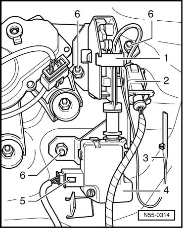

Latch For Hinged Window
Rear Lid
Latch for Hinged Window
Removing
• Open the hinged window and then open the rear lid.
- Remove the rear lid trim panel.

- Remove the emergency release - 3 - from the rear lid.
Emergency release can only be operated with trim removed.
- Disconnect harness connector - 2 - for hinged window lock - 1 - and harness connector - 5 - for unlocking unit - 4 -.
- Remove the nuts - 6 - from the lock - 1 -.
Installation
To install, perform the steps used for removal in reverse order.
- Tightening specification: Hex nuts - 6 - 8 Nm.